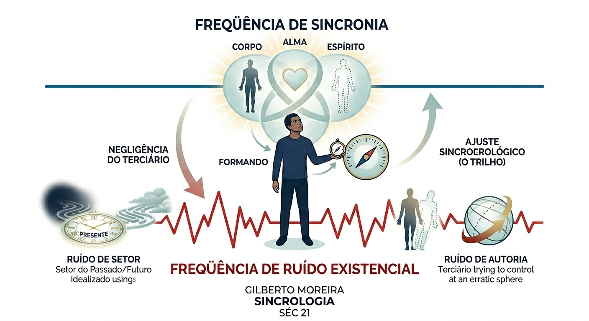

Modelo de Operação e Diagnóstico de Ruído
A Insaciedade Crônica manifesta-se tecnicamente através do Ruído Existencial. No modelo sincrológico, o Espírito atua como a energia operacional que ativa o Software (Alma) e o Hardware (Corpo). O ruído é a falha de sistema resultante do desalinhamento com a ordem original.

"Onde o Espírito não governa, a Alma se confunde e o Corpo sofre."